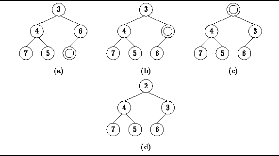
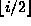
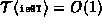
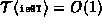

Data Structures and Algorithms
with Object-Oriented Design Patterns in Java
Data Structures and Algorithms
with Object-Oriented Design Patterns in Java
There are two requirements which must be satisfied when
an item is inserted in a binary heap.
First, the resulting tree must have the correct shape.
Second, the tree must remain heap-ordered.
Figure  illustrates the way in which this is done.
illustrates the way in which this is done.
Since the resulting tree must be a complete tree,
there is only one place in the tree where a node can be added.
That is, since the bottom level must be filled from left to right,
the node node must be added at the next available position in the bottom
level of the tree as shown in Figure (a).

Figure: Inserting an item into a binary heap.
In this example, the new item to be inserted has the key 2.
Note that we cannot simply drop the new item into the next position
in the complete tree because the resulting tree is no longer heap ordered.
Instead, the hole in the heap is moved toward the root
by moving items down in the heap
as shown in Figure (b) and (c).
The process of moving items down terminates either when we reach the root
of the tree or when the hole has been moved up to a position in which
when the new item is inserted the result is a heap.
Program gives the code for inserting an item
in a binary heap.
The enqueue method of the BinaryHeap class
takes as its argument the item to be inserted in the heap.
If the priority queue is full an exception is thrown.
Otherwise, the item is inserted as described above.
Program: BinaryHeap class enqueue method.
The implementation of the algorithm is actually remarkably simple. Lines 13-17 move the hole in the heap up by moving items down. When the loop terminates, the new item can be inserted at position i. Therefore, the loop terminates either at the root, i=1, or when the key in the parent of i, which is found at position , is smaller than the item to be inserted.
Notice too that a good optimizing compiler will recognize that the subscript calculations involve only division by two. Therefore, the divisions can be replaced by bitwise right shifts which usually run much more quickly.
Since the depth of a complete binary tree with n
nodes is  ,
the worst case running time for the enqueue operation is
,
the worst case running time for the enqueue operation is

where  is the time required to compare to objects.
If ,
the enqueue operation is simply
is the time required to compare to objects.
If ,
the enqueue operation is simply  in the worst case.
in the worst case.
 Copyright © 1998 by Bruno R. Preiss, P.Eng. All rights reserved.
Copyright © 1998 by Bruno R. Preiss, P.Eng. All rights reserved.